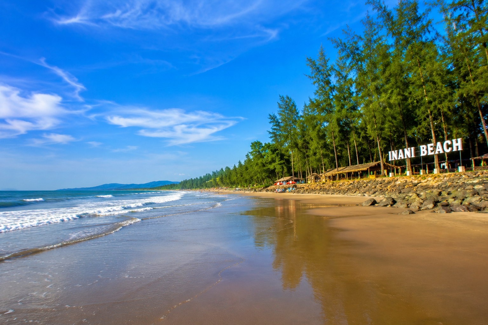
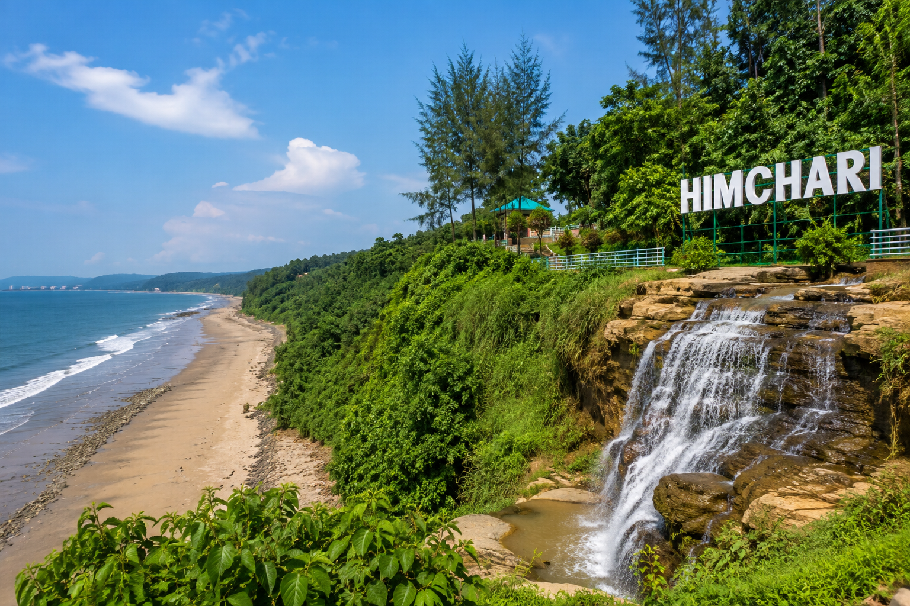
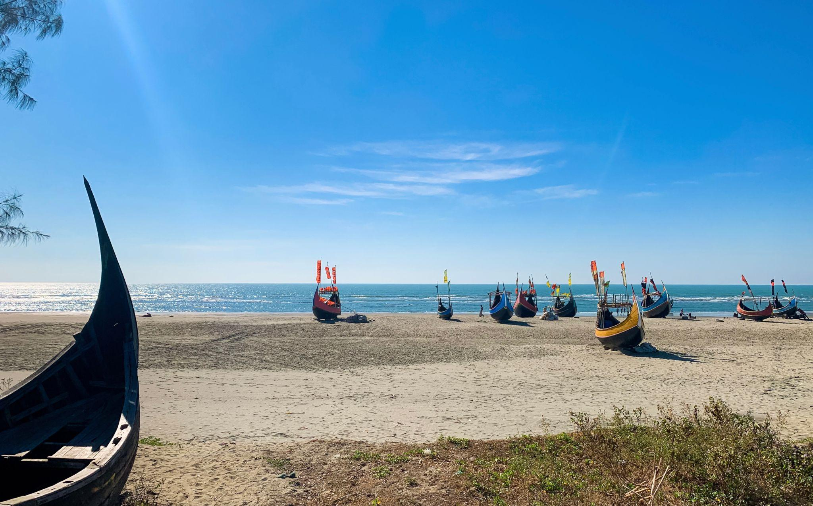
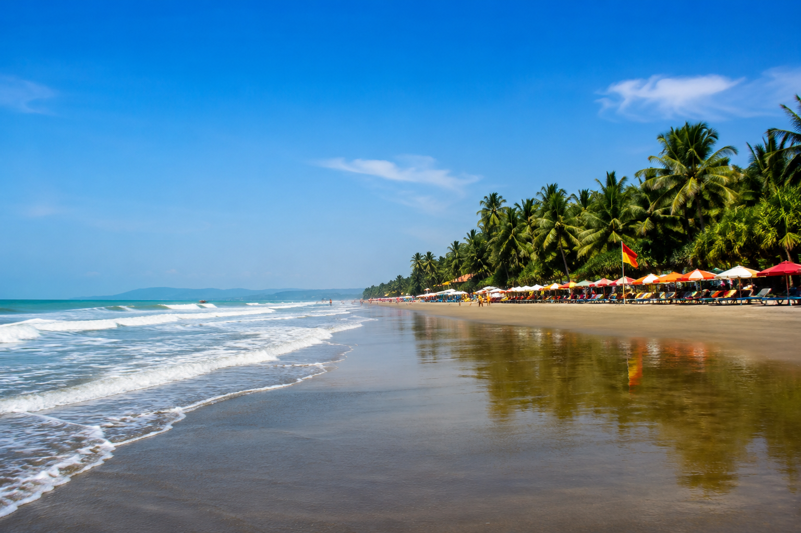
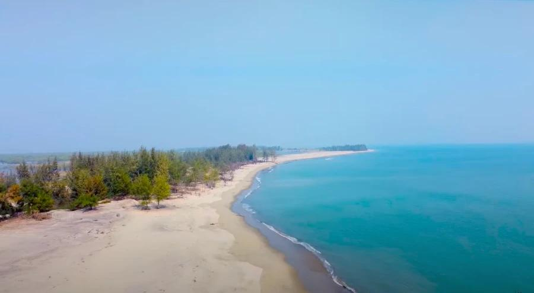
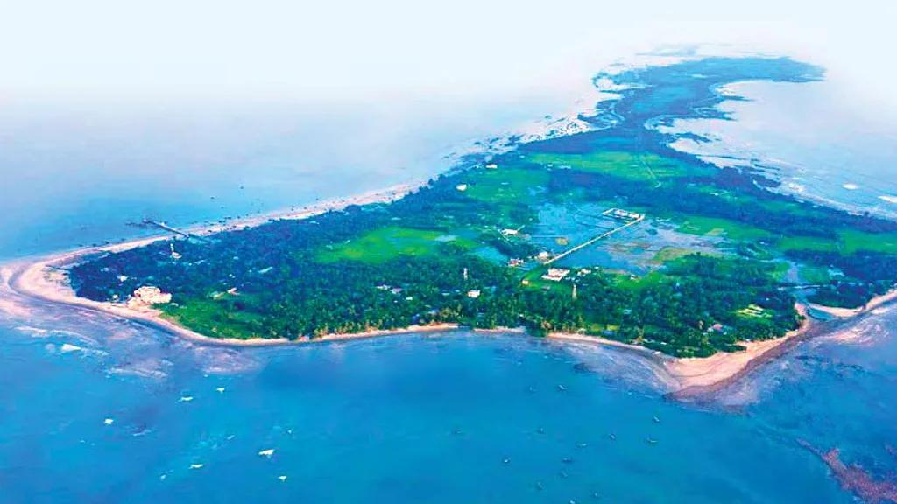

イナニビーチは、バングラデシュのコックスバザールにある美しいビーチです。青い海、黄金色の砂浜、自然にできたサンゴ石が特徴です。特に夕日の景色が美しく、多くの観光客を魅了しています。静かな自然の中で散歩や写真撮影を楽しみ、家族や友達とリラックスした時間を過ごせる人気の観光スポットです。

ヒムチャリは、バングラデシュのコックスバザールにある美しい観光スポットです。緑豊かな丘、美しい滝、青い海の景色が特徴です。特にヒムチャリ国立公園は自然が豊かで、丘の上からベンガル湾の素晴らしい景色を楽しむことができます。自然の中で散歩や写真撮影を楽しみ、家族や友達と素敵な時間を過ごせる人気の場所です。

マリンドライブは、バングラデシュのコックスバザールからテクナフまで続く美しい海岸道路です。道路の片側には青いベンガル湾、もう片側には緑豊かな丘が広がっています。特に夕日の景色が美しく、ドライブや写真撮影を楽しむことができます。自然の美しさを感じながら、家族や友達と素晴らしい時間を過ごせる人気の観光スポットです。

コラトリビーチは、バングラデシュのコックスバザールにある、とてもきれいなビーチです。青い海と広いすなはまがあり、たくさんのかんこうきゃくがあつまります。とくに夕日がとてもきれいで、海のそばをさんぽしたり、しゃしんをとったりすることができます。かぞくや友だちといっしょに、楽しい時間をすごせる人気のかんこうスポットです。

ソナディア島は、バングラデシュのコックスバザールから約100キロ離れた美しい島です。白い砂浜、青い海、豊かな自然が特徴です。特に夕日の景色が美しく、多くの観光客を魅了しています。自然の中で散歩や写真撮影を楽しみ、家族や友達とリラックスした時間を過ごせる人気の観光スポットです。

モヘシュカルイ島は、バングラデシュのコックスバザールから約50キロ離れた美しい島です。白い砂浜、青い海、豊かな自然が特徴です。特に夕日の景色が美しく、多くの観光客を魅了しています。自然の中で散歩や写真撮影を楽しみ、家族や友達とリラックスした時間を過ごせる人気の観光スポットです。